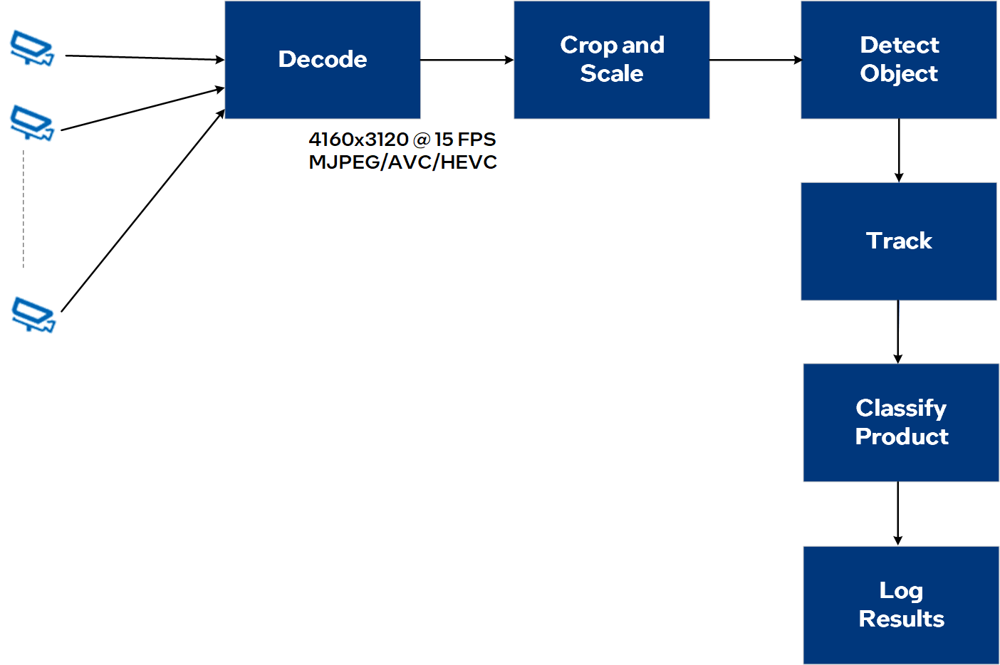

Report Issue or Submit Feedback
High-quality testable ingredients needed to create an automated self-checkout solution.
Building blocks needed to enable the use case with solid performance numbers.
Hardware requirements to support the workloads and scale the solution.
Predictable return on investment (ROI) and lower total cost of ownership (TCO) to deploy and manage the solution.
The Automated Self-Checkout Reference Implementation provides critical components required to build and deploy a self-checkout use case using Intel® hardware, software, and other open source software. This reference implementation provides a pre-configured automated self-checkout pipeline optimized for Intel® hardware.
To build the Intel® Automated Self-Checkout Reference Implementation, you need:
To know about the supported platforms, see the list of platforms.
Using this reference implementation, you can:
With this reference implementation, the self-checkout stations can:
The video stream is cropped and resized to enable the inference engine to run the associated models. The object detection and product classification features identify the SKUs during checkout. The bar code detection, text detection, and recognition features further verify and increase the accuracy of the detected SKUs. The inference details are then aggregated and pushed to the enterprise service bus or MQTT to process the combined results further.
The reference implementation includes:
Find the latest performance results by choice of Intel® processors for the vision-enabled workloads.
You can open an issue on GitHub to report a problem related to the reference implementation or give feedback.
Join the Intel Edge community and stay updated on the latest edge resources from Intel.
Product and Performance Information
1Performance varies by use, configuration and other factors. Learn more at www.Intel.com/PerformanceIndex.